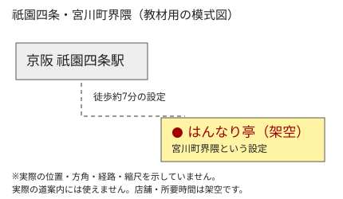

京料理・御仕出し
はんなり亭
― 京都・祇園四条 ―
創業 1892年（明治25年）（設定）
創業 1892年（明治25年）（設定）
いらっしゃいませ。
どうぞごゆっくり。
◆ 今月のお知らせ
◆ 季節のお献立
◆ 配達について
◆ FAX注文用紙
【お電話・FAX】
TEL 075-XXX-0101
FAX 075-XXX-0102
※教材用の無効な番号です
営業時間 11時半～20時
水曜定休（祝日は営業）
仕出しは別途ご相談
あなたは
0012846
番目のお客様です。
（教材用・固定表示）
御料理
御仕出し
当ホームページは
文字サイズ「中」を推奨。
画面幅1024ピクセル以上で
ご覧ください。
Internet Explorer 6.0にて
表示確認済み（当時風の設定）。
四季折々の京の味 慶事・法事・各種お集まりに
はんなり亭
京 料 理 ・ 御 仕 出 し
HANNARI-TEI HOMEPAGE 開設 平成13年6月吉日
■ お店のご案内 ■

| 屋号 | 京料理・御仕出し はんなり亭（架空） |
|---|---|
| 所在地 | 京都市東山区・宮川町界隈（祇園四条） ※地域名は実在しますが、店舗・番地は架空の設定です。 |
| 電話／FAX | 075-XXX-0101 ／ 075-XXX-0102（発信不可） |
| 営業 | 11:30～14:00 ／ 17:00～20:00（夜は要予約） |
| 定休日 | 水曜日・祝日の場合は営業、振替休業あり |
| 店舗 | 土地50坪・自社所有の3階建て |
| お席 | 総席数50席 お座敷二室・ご宴会は一組二名様～二十名様まで |
略図（架空）

京阪・祇園四条駅より徒歩約七分という設定です。
※店舗の位置・所要時間は教材用の想定です。略図は実際の経路・縮尺を示していません。
お車でお越しの方
店前は一台分のみ（要連絡）。満車の際は近隣の有料駐車場をご利用下さい。
大きなお車は入れません。お荷物の積み下ろしについてもご相談下さい。
当店のあゆみ
1892年（明治25年） 初代が仕出し店を開く。
昭和38年 現在の場所へ移転。
平成13年 ホームページを開設。
以上はすべて教材用の創作です。